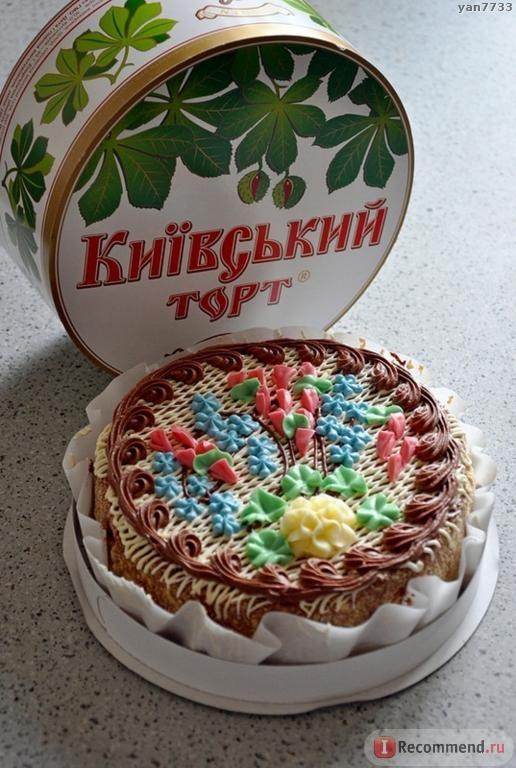

Привет! Меня зовут Тихонова Полина и это мое пятое домашнее задание по курсу "Веб разработчик"!
Домашнее задание:
- Создать секцию, внутри которой 3 ссылки:
- Ссылка на внешний сайт, которая открывается в новой вкладке
- Ссылка на якорь (определенное место на странице, например подвал)
- Ссылка скачивание файла (любого)
- Создать секцию. Внутри разместить картинку шириной 250px. Под картинкой ссылка "купить" в виде изображения корзины;
- Создать секцию высотой во весь экран, повесить на нее id example_1. Установить фон-картинку. Растянуть ее на ширину всей секции. Картинка должна заполнять всю секцию.
Я создала секцию шириной в половину экрана, чтобы было видно, что картинка заполняет секцию, а не всю страницу. - Создать секцию высотой во весь экран, повесить на нее id example_2. Установить фон-паттерн.
- Выгрузить сайт в облако и прикрепить ссылку на архив с сайтом в гугл таблицу.
Первое задание
Второе задание.
Купим торт:

Самая последняя секция
Хотя в текте домашки и так есть якорные ссылки )))
Вернуться к пунктам задания.